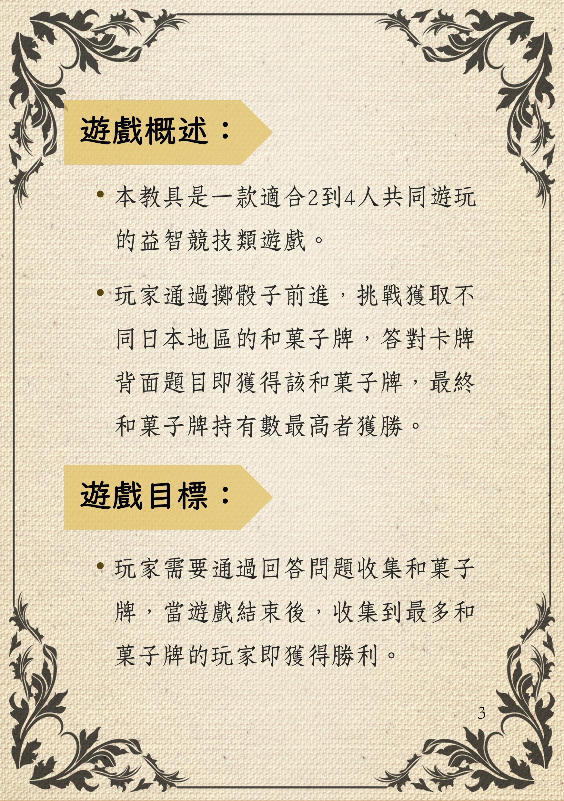

遊戲概述與目標

說明書第1頁 - 遊戲概述與目標
本教具是一款適合2到4人共同遊玩的益智競技類遊戲。
玩家通過擲骰子前進，挑戰獲取不同日本地區的和菓子牌，答對卡牌背面題目即獲得該和菓子牌。
遊戲目標：當遊戲結束後，收集到最多和菓子牌的玩家獲得勝利。
玲瓏菓子完整玩法指南
說明書第1頁 - 遊戲概述與目標
本教具是一款適合2到4人共同遊玩的益智競技類遊戲。
玩家通過擲骰子前進，挑戰獲取不同日本地區的和菓子牌，答對卡牌背面題目即獲得該和菓子牌。
遊戲目標：當遊戲結束後，收集到最多和菓子牌的玩家獲得勝利。
說明書第2頁 - 遊戲內容物
說明書第3頁 - 遊戲準備
說明書第4、5頁 - 起點與上生菓子
說明書第6頁 - 道具與勝利條件
道具觸發：在遊玩過程中，可能會遇到「甜君」或「鹹子」，這兩位會給予玩家道具，從而影響遊戲進程。
勝利結算：結束遊戲後玩家須結算手上擁有的和菓子卡數，數量最大者獲勝。上生菓子可納入計算。若平手則利用剩餘和菓子牌進行搶答，若無剩餘卡牌則擲骰決定。

說明書第7頁 - 玩家回合流程